[1] 128.2544Voeding en management voor hoge productie
Albart Coster
2025-11-03
Voorstellen
Inhoud
4 Onderwerpen, allemaal gericht op productie en voerwinst
- Analyse van huidige bedrijf
- Melkproductie: ruwvoerwinning
- Jongveeopfok
- Milieudoelen
Analyse van bedrijf VOF van Dalfsen-Kronenberg
- MPR
- Rantsoen
Rantsoen
| Analyse van rantsoen VOF van Dalfsen-Kronenberg | ||||||||
|---|---|---|---|---|---|---|---|---|
| Kg | Per.Koe | DS | VEM | RE | DVE | OEB | Zetmeel | |
| Hooi | 400 | 3.36 | 557 | 809 | 109 | 51 | −16 | 0 |
| Herfstbaal | 800 | 6.72 | 200 | 900 | 200 | 60 | 70 | 0 |
| Zomerkuil | 500 | 4.20 | 500 | 850 | 150 | 50 | 40 | 0 |
| Voorjaarskuil | 1500 | 12.61 | 470 | 923 | 174 | 66 | 43 | 0 |
| Witlofwortels | 1100 | 9.24 | 149 | 1021 | 58 | 8 | −90 | 0 |
| Proti+ | 1200 | 10.08 | 350 | 1083 | 245 | 115 | 71 | 90 |
| Mais | 900 | 7.56 | 405 | 1009 | 58 | 51 | −50 | 363 |
| Perspulp | 500 | 4.20 | 270 | 1087 | 84 | 96 | −62 | 0 |
| Weerstandmineraal | 2 | 0.02 | 990 | 0 | 0 | 0 | 0 | 0 |
| Vruchtbaarheidsmineraal | 4 | 0.03 | 990 | 0 | 0 | 0 | 0 | 0 |
| Krijt | 8 | 0.07 | 990 | 0 | 0 | 0 | 0 | 0 |
| Monocalciumfosfaat | 6 | 0.05 | 990 | 0 | 0 | 0 | 0 | 0 |
| Zout-Jodium | 6 | 0.05 | 990 | 0 | 0 | 0 | 0 | 0 |
| Natriumbicarbonaat | 20 | 0.17 | 990 | 0 | 0 | 0 | 0 | 0 |
| Totaal | 21 | 942 | 146 | 65 | 15 | 69 | ||
Productie
Achtergrond. Energievoorziening
We kennen VEM. VEM is een maat voor Netto Energie:
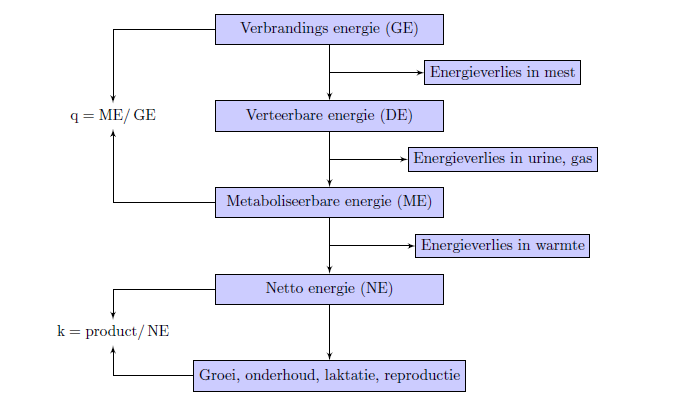Schema opdeling energie
2. Achtergrond. Verbrandingsenergie
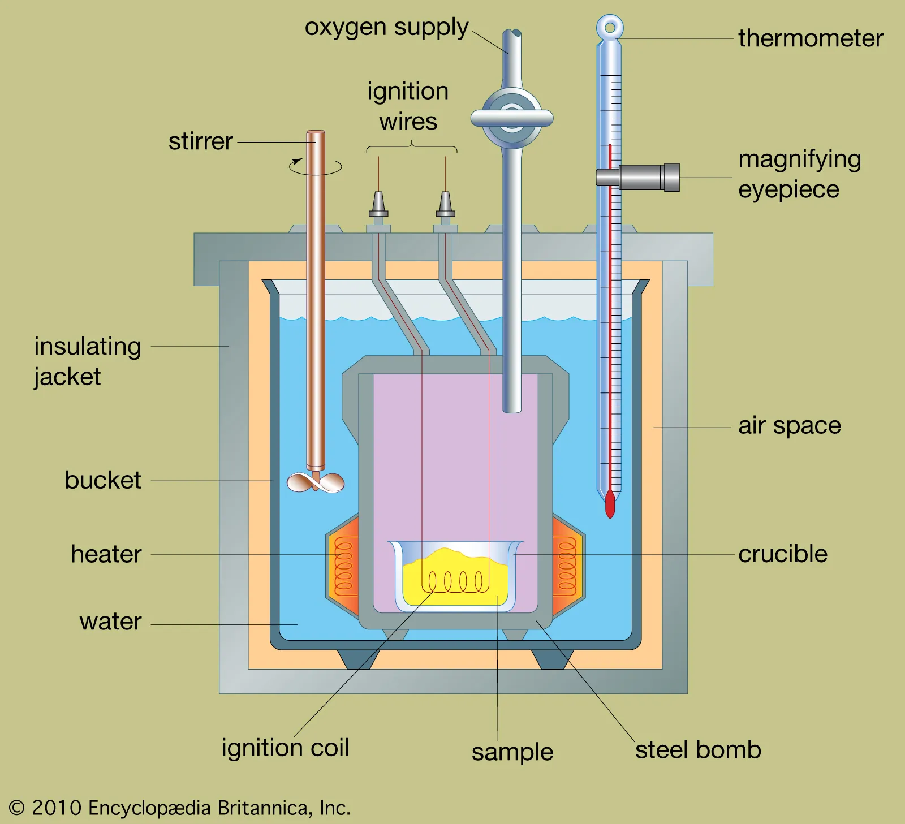Bomb-calorimeter
Energie: We kunnen het ook berekenen:
| VE waarde(MJ/kg) | |
|---|---|
| Zetmeel | 17.70 |
| Vet | 39.33 |
| NDF | 17.60 |
| RE | 23.63 |
| ROM | 16.73 |
| ROM = rest van suikers, vetzuren, glycerol, oplosbare vezel | |
| @nrc2021 | |
- Internationale eenheid voor energie is Joule. 1000 VEM = 6.9 MJoule.
2. Achtergrond. Verteerbare energie
Moet experimenteel vaststeld worden:

Fistuleerde koe
Belangrijke concepten:
- Verteerbaarheid wordt beïnvloed door behandeling van grondstof:
| Verteerbaarheid | |
|---|---|
| Standaard gemalen | 92 % |
| Fijn gemalen \((< 1.25\mu m)\) | 92 % |
| Matig gemalen \((1.5 - 3.25 \mu m)\) | 89 % |
| CCM zeer fijn gemalen \((\)<2 )$ | 96 % |
| Maisvlokken | 94 % |
| @nrc2021 | |
- Opname beïnvloedt verteerbaarheid. Bij hogere opname lagere verteerbaarheid.
- Nutriënten beïnvloeden elkaars verteerbaarheid (zetmeel verlaagt NDF verteerbaarheid, vetten beïnvloeden elkaars verteerbaarheid en NDF verteerbaarheid, eiwit verbetert zetmeel- en NDF vertering)
2. Achtergrond. Energiebehoefte
| Energiebehoefte per doel | |
|---|---|
| Doel | Energie |
| Groei | 23.5 MJ/kg LW |
| Onderhoud | \[0.418 \textrm{MJ}/\textrm{kg LW}^{0.75}\] |
| Melkproductie | \[1.51 + 0.405\cdot\textrm{vet}\%\] |
| Kalf | vanaf 200 dagen dracht belangrijk |
| Activiteit | \[1.46\textrm{MJ}/(\textrm{kg LW}\cdot\textrm{km})\] |
2. Achtergrond. Eiwit

Schema eiwit rund
2. Achtergrond. DVE
Opbouw DVE:
\(\textrm{DVE} = \textrm{DVBE} + \textrm{DVME} - \textrm{DVFE}\)
\(\textrm{DVME} = 0.75\cdot0.85\cdot\textrm{MREE}\)
\(\textrm{MREE} = 0.15\cdot{FOS}\)
2. Achtergrond. Behoefte aan DVE en VEM
| VEM en DVE behoeftes voor oplopende melkproductie | ||||||||
|---|---|---|---|---|---|---|---|---|
| Productie |
3.5% vet, 3.03% eiwit
|
3.75% vet, 3.18% eiwit
|
4.00% vet, 3.32% eiwit
|
4.25% vet, 3.45% eiwit
|
||||
| VEM | DVE | VEM | DVE | VEM | DVE | VEM | DVE | |
| 1 | 5730 | 160 | 5750 | 160 | 5760 | 170 | 5780 | 170 |
| 2 | 6140 | 200 | 6170 | 210 | 6210 | 210 | 6240 | 220 |
| 3 | 6550 | 250 | 6600 | 250 | 6650 | 260 | 6700 | 270 |
| 4 | 6960 | 290 | 7030 | 300 | 7100 | 310 | 7160 | 320 |
| 5 | 7370 | 340 | 7460 | 350 | 7540 | 360 | 7620 | 370 |
| 6 | 7790 | 380 | 7890 | 390 | 7990 | 410 | 8090 | 420 |
| 7 | 8200 | 420 | 8320 | 440 | 8440 | 450 | 8560 | 470 |
| 8 | 8620 | 470 | 8760 | 490 | 8890 | 500 | 9020 | 520 |
| 9 | 9040 | 510 | 9190 | 530 | 9340 | 550 | 9490 | 570 |
| 10 | 9460 | 560 | 9630 | 580 | 9800 | 600 | 9970 | 620 |
| 12 | 10300 | 650 | 10500 | 680 | 10710 | 710 | 10910 | 730 |
| 14 | 11140 | 750 | 11390 | 780 | 11630 | 810 | 11870 | 840 |
| 16 | 11990 | 840 | 12280 | 880 | 12550 | 920 | 12830 | 950 |
| 18 | 12850 | 940 | 13170 | 980 | 13480 | 1020 | 13790 | 1060 |
| 20 | 13710 | 1040 | 14070 | 1090 | 14420 | 1130 | 14760 | 1180 |
| 22 | 14580 | 1140 | 14970 | 1190 | 15360 | 1240 | 15740 | 1290 |
| 24 | 15450 | 1240 | 15880 | 1300 | 16310 | 1360 | 16730 | 1410 |
| 26 | 16330 | 1340 | 16800 | 1410 | 17260 | 1470 | 17720 | 1530 |
| 28 | 17210 | 1440 | 17720 | 1520 | 18220 | 1590 | 18720 | 1650 |
| 30 | 18090 | 1550 | 18640 | 1630 | 19180 | 1700 | 19720 | 1770 |
| 32 | 18980 | 1660 | 19570 | 1740 | 20160 | 1820 | 20730 | 1900 |
| 34 | 19880 | 1760 | 20510 | 1860 | 21130 | 1940 | 21750 | 2030 |
| 36 | 20780 | 1870 | 21450 | 1970 | 22110 | 2070 | 22770 | 2150 |
| 38 | 21690 | 1990 | 22400 | 2090 | 23100 | 2190 | 23800 | 2280 |
| 40 | 22600 | 2100 | 23350 | 2210 | 24100 | 2320 | 24830 | 2420 |
| 42 | 23520 | 2210 | 24310 | 2330 | 25100 | 2440 | 25870 | 2550 |
| 44 | 24440 | 2330 | 25270 | 2450 | 26100 | 2570 | 26920 | 2690 |
| 46 | 25360 | 2440 | 26240 | 2580 | 27110 | 2710 | 27970 | 2830 |
| 48 | 26290 | 2560 | 27220 | 2700 | 28130 | 2840 | NA | NA |
| 50 | 27230 | 2680 | 28200 | 2830 | 29150 | 2970 | NA | NA |
Bron: CVB (2012)
Toepassingen
- Eiwit naar behoefte voeren
- Zorgen voor goede kuilen
- Verloop productie over jaar
- Voeren van vetten
Toepassing 1. Eiwit naar behoefte voeren
Voer dieren naar behoefte:
We spreken over Darm Verteerbaar Eiwit, DVE
- Onderhoud: \(\mathrm{DVE}{}_{(g/dag)} = (2,75 \cdot \mathrm{lg}^{0,5} + 0,2 \cdot \mathrm{lg}\cdot{0,6})/0,67\)
- Productie: \(\mathrm{DVE}{}_{(g/dag)} = \mathrm{mp}{}\cdot \mathrm{E}{}\cdot1,396 + (\mathrm{mp}{}\cdot \mathrm{E}{})^2\cdot 0,000195\)
[1] 2834.287[1] 2962.542[1] 1414.35[1] 1542.604Bron: CVB (2012)
Toepassing 1. Eiwit naar behoefte voeren, nog meer bewijs
- Bewijs uit data
Toepassing 1. Eiwit naar behoefte voeren. Experimenteel bewijs

Bron: Larsen, Lapierre, en Kristensen (2014)
Eiwitbenutting Ruwvoerwinning
Belangrijkste punt: verbeter kuilgras

Bron: Aschenbach e.a. (2019)
| Kenmerk | basis | Sara1 | Sara2 |
|---|---|---|---|
| LPS | 14692.00 | 131209.0 | 168285.00 |
| Methylalanine | 37.30 | 37.3 | 46.00 |
| Putrescine | 14.00 | 32.2 | 30.70 |
| Cadaverine | 15.90 | 24.2 | 24.30 |
| Histamine | 2.03 | 13.0 | 5.19 |
Bron: Humer e.a. (2018)


Bron: Pieper, Pieper, en Korn (2009)
Ruwvoerwinning. Snel drogen
| Invloed kneuzen en drogen op kwaliteit Sainfoin. | |||||||
|---|---|---|---|---|---|---|---|
| Kenmerk | 0 |
Ongekneusd
|
Gekneusd
|
||||
| 25 | 71 | 77 | 5 | 25 | 29 | ||
| Droogtijd | 0.0 | 25.0 | 71.0 | 77.0 | 5.0 | 25.0 | 29.0 |
| DS (g/kg DS) | 123.0 | 215.0 | 323.0 | 442.0 | 221.0 | 322.0 | 435.0 |
| pH | 6.0 | 6.2 | 6.2 | 6.4 | 6.3 | 6.0 | 6.1 |
| WSC (g/kg DS) | 92.0 | 80.0 | 73.0 | 72.0 | 84.0 | 80.0 | 81.0 |
| BC (meq/kg DS_ | 360.0 | 326.0 | 351.0 | 349.0 | 268.0 | 275.0 | 197.0 |
| TN (g /kg DM) | 28.0 | 29.0 | 30.0 | 27.0 | 24.0 | 24.0 | 24.0 |
| NH3-N (g/kg TN) | 5.0 | 27.0 | 37.0 | 39.0 | 8.0 | 19.0 | 19.0 |
| NPN (g/kg TN) | 122.0 | 279.0 | 349.0 | 416.0 | 158.0 | 193.0 | 202.0 |
| Total AA (mol/kg N) | 39.6 | 39.2 | 39.4 | 37.4 | 37.9 | 38.1 | 38.4 |
| Free AA (mol/kg N) | 2.4 | 10.8 | 11.5 | 12.9 | 4.6 | 6.7 | 7.2 |
Bron: Cavallarin e.a. (2005)
- Snelheid van drogen bepaalt kwaliteitsverliezen
- Snelheid belangrijker dan uiteindelijke DS-percentage
Snelheid van drogen wordt beïnvloed door:
Kneuzen en schudden
| Invloed van kneuzen en schudden op droogsnelheid. | ||||
|---|---|---|---|---|
| Kenmerk |
Droogsnelheid
|
% van controle
|
||
| Ongeschud | Geschud | Ongeschud | Geschud | |
| Luzerne | ||||
| Control | 0.124a | 0.131a | 100 | 106 |
| Rubber rolls | 0.152bc | 0.176b | 123 | 142 |
| Steel flails | 0.160cd | 0.184b | 129 | 148 |
| Plastic V-flails | 0.169d | 0.182b | 136 | 147 |
| Control | 0.141a | 0.195a | 100 | 138 |
| Rubber rolls | 0.175b | 0.226b | 124 | 160 |
| Steel flails | 0.172b | 0.221b | 122 | 157 |
| Plastic V-flails | 0.147a | 0.218b | 104 | 155 |
| Control | 0.131a | 0.139a | 100 | 106 |
| Rubber rolls | 0.140b | 0.186b | 107 | 142 |
| Steel flails | 0.160c | 0.188b | 122 | 144 |
| Plastic V-flails | 0.135b | 0.133a | 103 | 102 |
| Gras | ||||
| Control | 0.042a | 0.045a | 100 | 107 |
| Rubber rolls | 0.043a | 0.053b | 102 | 126 |
| Steel flails | 0.051b | 0.062d | 121 | 148 |
| Plastic V-flails | 0.044a | 0.057c | 105 | 136 |
| Control | 0.064a | 0.072a | 100 | 113 |
| Rubber rolls | 0.081b | 0.109b | 127 | 170 |
| Steel flails | 0.113c | 0.121c | 177 | 189 |
| Plastic V-flails | 0.112c | 0.113b | 175 | 177 |
| Control | 0.228a | 0.268a | 100 | 118 |
| Rubber rolls | 0.284b | 0.349c | 125 | 153 |
| Steel flails | 0.284b | 0.323b | 125 | 142 |
| Plastic V-flails | 0.231a | 0.311b | 101 | 136 |
| letters geven significante verschillen aan. | ||||
Bron: Borreani, Tabacco, en Ciotti (1999)
Moment van schudden maakt echter ook uit:

Bron: Savoie e.a. (2002)
En droogte van ondergrond ook
Ruwvoerwinning. Intermezzo: tijd van drogen en vitamine D
Vitamine D gehalte in gras neemt toe tijdens de veldperiode:
| Invloed van tijd en weer op Vit D3 gehalte in grassen. | |
|---|---|
| Tijd | IE/gram |
| Spaanse Dravik, gemaaid 11-7-1951 11:00 | |
| 1:30 p.m. 6/21 | 0.10 |
| 1:30 p.m. 6/22 | 0.87 |
| Noon 6/24 | 0.52 |
| Luzerne, gemaaid 21-6-1951 13:30 | |
| 1:30 p.m. 6/21 | 0.25 |
| 1:30 p.m. 6/22 | 0.82 |
| Noon 6/24 | 0.36 |
| 2e S. Luzerne, gemaaid 15/8-1950 7:00 | |
| 7 a.m. 8/15 | 0.07 |
| 11 a.m. 8/16 | 0.28 |
| 4 p.m. 8/17 | 1.00 |
| Spaanse Dravik en Luzerne, gemaaid 28/6/1950 7:00 | |
| 7 a.m. 6/28 | 0.11 |
| 7 p.m. 6/28 | 0.20 |
| 12 noon 6/29 | 1.00 |
| 10 a.m. 6/30 | 1.60 |
| 5 p.m. 7/11 | 0.42 |
| 1 p.m. 7/13 | 1.19 |
| 5 p.m. 7/13 | 2.78 |
Bron: Newlander en Riddell (1952)
Ruwvoerwinning. Snel conserveren
Verliezen gaan na het inkuilen door tot pH stabiel (laag) is. pH van kuil daalt als er melkzuur wordt gevormd. Dat wordt pas gevormd als zuurstof in kuil op is.
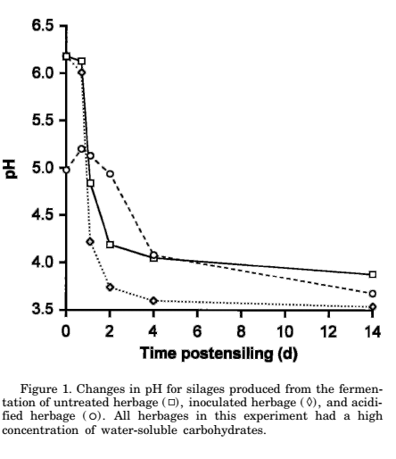 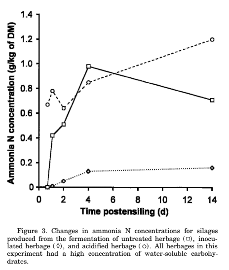
| Onbehandeld | Geïnoculeerd | Aangezuurd | |
|---|---|---|---|
| pH | 3.66a | 3.43c | 3.52b |
| DM, g/kg of FM | 177.7a | 180.0a | 181.7a |
| Lactic acid, g/kg of DM | 103.56a | 135.75a | 93.85a |
| Acetic acid, g/kg of DM | 28.40a | 14.14b | NDc |
| Lactic acid:acetic acid | 3.85b | 9.14a | NDc |
| Total N, g/kg of DM | 19.18ab | 18.07bc | 19.69a |
| Ammonia N, g/kg of total N | 54.38a | 18.45b | 54.73a |
| RUBISCO, % of herbage RUBISCO | 51b | 62a | 53ab |
| letters geven significante verschillen aan | |||
Bron: Davies e.a. (1998)
Ruwvoerwinning: hakselen en aanrijden
| Dichtheid | Melkzuur (g/kg) |
pH | NH3 (g/kg N) |
Boterzuur (g/kg) |
Ethanol (g/kg) |
Clostridium Sporen (log KVE/g) |
|---|---|---|---|---|---|---|
| PC 4 cm | ||||||
| Low | 25 | 4.1 | 114 | 0 | 1 | 3.4 |
| High | 26 | 4.0 | 115 | 0 | 1 | 4.2 |
| FW 4 cm | ||||||
| Low | 10 | 6.0 | 295 | 7 | 1 | 6.3 |
| High | 18 | 5.1 | 188 | 9 | 3 | 6.2 |
| FW 26 cm | ||||||
| Low | 10 | 5.8 | 227 | 6 | 1 | 6.7 |
| High | 18 | 5.1 | 182 | 8 | 1 | 6.8 |
Bron: Pauly en Lingvall (1999)
Ruwvoerwinning: afdekken
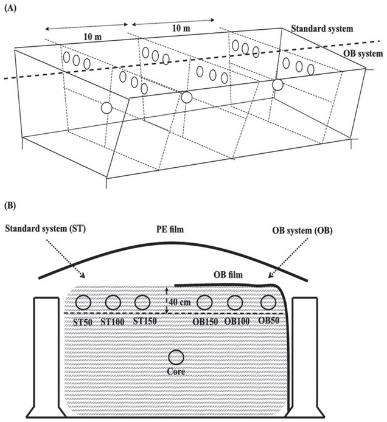| Eigenschappen van folie in onderzoek. | ||
|---|---|---|
| OB | PE | |
| Nominal thickness | 45 | 180 |
| Measured thickness | 44.1 ± 0.81 | 176.2 ± 3.92 |
| Oxygen permeability | 39.4 ± 1.62 | 1,565.0 ± 29 |
| Puncture resistance | 7.5 ± 1.34 | 5.2 ± 0.42 |
| MD Elmendorf tear, g | 446.7 ± 43 | 284.1 ± 43 |
| CD Elmendorf tear, g | 1,104 ± 119 | 2,082.1 ± 50.3 |
| Microbiële en fermentatieeigenschappen van kuilen. | |||||||
|---|---|---|---|---|---|---|---|
| CCOR | OB50 | OB100 | OB150 | ST50 | ST100 | ST150 | |
| DM (oven), % | 35.00 | 35.20 | 35.20 | 34.80 | 37.80 | 36.30 | 36.70 |
| DM (corr), % | 35.70 | 36.00 | 35.90 | 35.80 | 38.90 | 38.40 | 38.80 |
| pH | 3.77 | 3.94 | 3.86 | 3.88 | 4.41 | 4.36 | 4.23 |
| NH3-N, % of total N | 5.60 | 5.40 | 5.40 | 5.20 | 6.20 | 6.30 | 6.40 |
| Lactate, % of DM | 7.80 | 6.90 | 6.00 | 6.10 | 4.60 | 5.50 | 5.50 |
| Acetate, % of DM | 0.95 | 0.85 | 0.74 | 1.18 | 0.63 | 0.63 | 0.64 |
| Propionate, % of DM | 0.65 | 0.42 | 0.37 | 0.49 | 0.47 | 0.46 | 0.42 |
| Butyrate, % of DM | 0.07 | 0.18 | 0.19 | 0.08 | 0.43 | 0.36 | 0.22 |
| Ethanol, % of DM | 0.27 | 0.34 | 0.66 | 0.61 | 0.89 | 0.69 | 0.84 |
| Yeasts, cfu/g | 0.10 | 4.72 | 3.92 | 3.94 | 6.42 | 5.11 | 4.75 |
| Molds, cfu/g | 0.10 | 0.10 | 0.10 | 0.10 | 2.61 | 2.44 | 2.18 |
| Voederwaarde op verschillende plekken in kuilen. | |||||||
|---|---|---|---|---|---|---|---|
| CCOR | OB50 | OB100 | OB150 | ST50 | ST100 | ST150 | |
| Ash, % of DM | 3.20 | 3.40 | 3.50 | 3.40 | 3.60 | 3.60 | 3.70 |
| CP, % of DM | 8.20 | 8.20 | 8.90 | 8.50 | 9.00 | 8.90 | 9.30 |
| Starch, % of DM | 36.50 | 34.50 | 34.00 | 35.40 | 30.40 | 30.10 | 33.10 |
| NDF, % of DM | 42.50 | 44.90 | 43.90 | 44.80 | 46.60 | 45.80 | 46.50 |
| NDF digestibility, % of NDF | 47.10 | 49.30 | 46.80 | 46.50 | 46.30 | 45.80 | 47.80 |
| IVDMD, % | 70.60 | 69.30 | 69.30 | 67.80 | 66.20 | 66.00 | 65.90 |
| TDN-1x, % | 64.30 | 63.50 | 63.50 | 63.10 | 60.20 | 61.50 | 61.30 |
| NE L-3x, Mcal/kg of DM | 1.42 | 1.38 | 1.41 | 1.39 | 1.31 | 1.33 | 1.34 |
| Milk, kg/t of DM | 1294.00 | 1255.10 | 1265.10 | 1254.80 | 1152.10 | 1188.20 | 1193.10 |
| DM loss, % | 5.14 | 5.07 | 4.91 | 7.69 | 9.86 | 10.90 | 7.69 |
Bron: Lima e.a. (2017)
Ruwvoerwinning: inkuilmiddel
Bron: Davies e.a. (1998)
| Eigenschappen van kuilen ingekuild met drie verschillende inkuilmiddelen over de tijd. | |||||||||
|---|---|---|---|---|---|---|---|---|---|
January
|
April
|
August
|
|||||||
| Control | Lactsil | Lactisil Fresh | Control | Lactsil | Lactisil Fresh | Control | Lactsil | Lactisil Fresh | |
| DM content, % | 35.90 | 36.70 | 35.20 | 36.20 | 36.30 | 35.50 | 36.70 | 37.20 | 35.90 |
| Silage pH | 3.81 | 3.82 | 3.97 | 3.90 | 3.94 | 4.19 | 3.80 | 3.79 | 4.05 |
| l-Lactic acid | 26.40 | 26.40 | 19.00 | 30.10 | 29.20 | 14.60 | 27.80 | 29.00 | 14.50 |
| dl-Lactic acid | 48.70 | 47.90 | 36.10 | 56.20 | 55.70 | 32.40 | 56.20 | 55.50 | 31.50 |
| Acetic acid | 15.50 | 13.90 | 25.40 | 15.50 | 14.10 | 34.50 | 17.10 | 15.30 | 36.50 |
| Propionic acid | 0.16 | 0.09 | 0.67 | 0.08 | 0.09 | 1.74 | 0.27 | 0.10 | 2.33 |
| Butyric acid | 0.02 | 0.02 | 0.02 | 0.02 | 0.02 | 0.03 | 0.03 | 0.06 | 0.03 |
| Ethanol | 10.90 | 7.90 | 9.00 | 9.40 | 10.00 | 9.90 | 9.60 | 11.20 | 10.30 |
| Propanol | 0.72 | 0.44 | 2.43 | 0.62 | 0.60 | 4.94 | 2.02 | 0.61 | 7.16 |
| Propyl acetate | 0.33 | 0.12 | 1.51 | 0.26 | 0.22 | 3.83 | 0.96 | 0.24 | 5.05 |
| 2-Butanol | 0.00 | 0.01 | 0.09 | 0.01 | 0.01 | 0.10 | 0.04 | 0.02 | 0.15 |
| Propylene glycol | 1.35 | 1.36 | 8.47 | 1.29 | 0.97 | 8.20 | 0.98 | 1.40 | 8.20 |
| Ammonia | 0.62 | 0.62 | 0.70 | 0.84 | 0.90 | 1.07 | 0.94 | 0.95 | 1.13 |
| Alanine | 3.13 | 2.98 | 3.67 | 3.50 | 3.58 | 4.54 | 3.87 | 3.55 | 4.71 |
| Glycine | 1.08 | 1.11 | 1.31 | 1.19 | 1.23 | 1.49 | 1.23 | 1.23 | 1.64 |
| Isoleucine | 0.92 | 0.89 | 0.91 | 0.98 | 1.00 | 1.18 | 1.07 | 1.06 | 1.33 |
| Leucine | 2.69 | 2.71 | 2.88 | 3.11 | 3.23 | 3.73 | 3.43 | 3.51 | 4.13 |
| Proline | 1.89 | 1.91 | 1.96 | 2.22 | 2.21 | 2.52 | 2.40 | 2.47 | 2.95 |
| Valine | 1.30 | 1.28 | 1.45 | 1.41 | 1.45 | 1.78 | 1.50 | 1.51 | 1.94 |
| Glucose | 1.98 | 1.27 | 0.46 | 2.92 | 2.52 | 0.57 | 2.82 | 3.77 | 0.71 |
| Benzoic acid | 0.01 | 0.01 | 0.01 | 0.01 | 0.02 | 0.02 | 0.01 | 0.00 | 0.01 |
| LAB2 | 7.08 | 7.05 | 7.39 | 7.16 | 7.21 | 8.39 | 7.10 | 6.69 | 7.80 |
| Yeast | 6.45 | 6.27 | 4.91 | 6.09 | 6.24 | 5.43 | 4.97 | 5.00 | 3.34 |
| Molds | 3.44 | 3.00 | 3.78 | 3.64 | 4.09 | 3.01 | 3.35 | 3.17 | |
| Silage temperature in bunker, °C | 18.30 | 17.80 | 18.80 | 15.00 | 15.20 | 16.80 | 16.90 | 17.60 | 18.60 |
| Aerobic stability, h | 39.00 | 37.00 | 88.00 | 36.00 | 33.00 | 53.00 | 37.00 | 43.00 | 100.00 |
| Deoxynivalenol | 592.00 | 532.00 | 653.00 | 714.00 | 574.00 | 634.00 | 503.00 | 553.00 | 631.00 |
| Nivalenol | 177.00 | 254.00 | 303.00 | 227.00 | 338.00 | 297.00 | 268.00 | 270.00 | 187.00 |
| Zearalenone | 15.00 | 42.00 | 43.00 | 52.00 | 58.00 | 25.00 | 35.00 | 90.00 | 57.00 |
Bron: Kristensen e.a. (2010)
- Voor behoud van eiwitkwaliteit: homofermentative middelen
- Voor aerobe stabiliteit: mengsel van homo- en heterofermentatieve middelen
Ruwvoerwinning: Inkuilen onder (zeer) moeilijke omstandigheden
| Eigenschappen van uitgangsmateriaal. | ||||||||
|---|---|---|---|---|---|---|---|---|
| Alfalfa.1 | Alfalfa.2 | Rough.blue-grass | Red.clover | Cocks.foot | Creeping.soft.grass | Peren..rye.grass.1 | Peren..rye.grass.2 | |
| Treatment with clostridia cfu/g FM | 255.0 | 188.0 | 205.0 | 186.0 | 191.0 | 208.0 | 201.0 | 181.0 |
| Crude protein (g/kg DM) | 16.0 | 23.5 | 18.4 | 18.5 | 19.1 | 16.8 | 15.8 | 16.9 |
| Sugar (g/kg DM) | 3.4 | 4.3 | 4.3 | 12.6 | 0.5 | 5.4 | 11.8 | 10.7 |
| Buffering capacity | 5.5 | 7.9 | 5.3 | 4.4 | 5.3 | 5.0 | 6.0 | 7.2 |
| Sugar/buffer. capacity | 0.6 | 0.5 | 0.8 | 2.9 | 0.1 | 1.1 | 2.0 | 1.5 |
| NO3 (g/kg) | 0.4 | 15.0 | 18.4 | 11.2 | 4.3 | 10.4 | 0.4 | 0.2 |
| Epiphytic LAB (log cfu/g) | NA | 4.0 | 4.7 | 5.9 | 4.8 | 6.4 | 4.9 | 5.0 |
Bron: Pieper, Pieper, en Korn (2009)
hier filmpjes van gras + maismengsel – – – – 
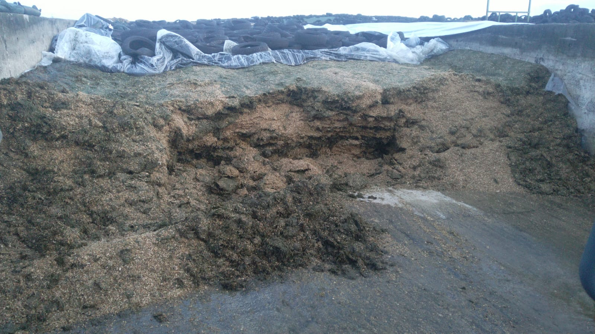
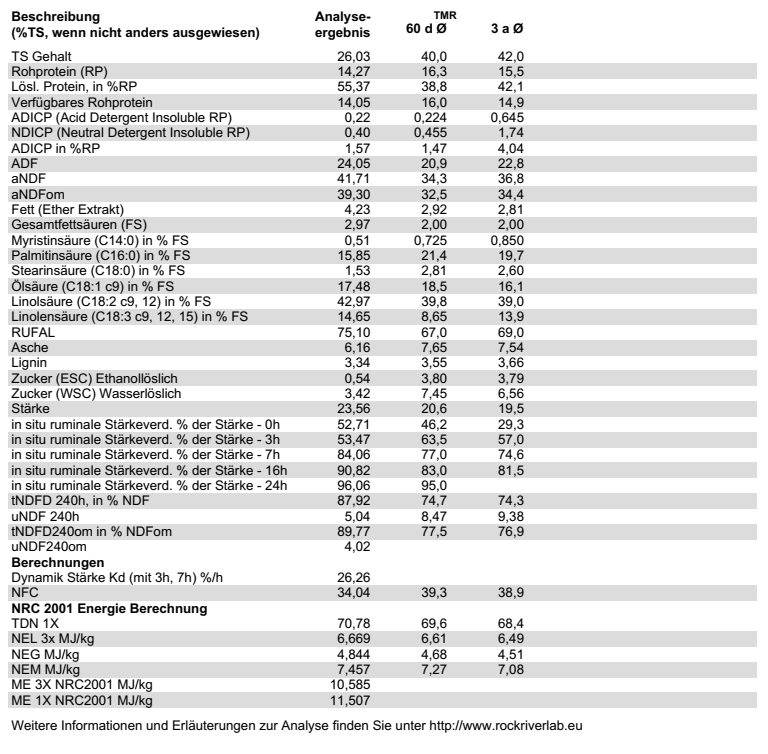
Ruwvoerwinning: Intermezzo: eiwitafbraak en rode klaver
Rode klaver bevat een enzym dat proteolyse remt:
| Invloed van toenemend aandeel rode klaver in luzernekuil. | |||||
|---|---|---|---|---|---|
| R0 | R30 | R50 | R70 | R100 | |
| pH | 4.48 | 4.37 | 4.29 | 4.46 | 4.20 |
| Lactic acid, % of DM | 6.34 | 7.12 | 7.77 | 7.66 | 8.76 |
| Acetic acid, % of DM | 1.14 | 1.11 | 1.03 | 1.08 | 1.14 |
| Lactic acid/acetic acid | 5.61 | 6.58 | 7.68 | 7.11 | 7.66 |
| Propionic acid, % of DM | 0.03 | 0.02 | 0.00 | 0.03 | 0.06 |
| Butyric acid, % of DM | 0.14 | 0.16 | 0.13 | 0.19 | 0.15 |
| TN, % of DM | 2.94 | 2.79 | 2.83 | 2.74 | 2.61 |
| NPN, % of TN | 48.10 | 44.10 | 41.00 | 38.40 | 35.40 |
| Peptide-N, % of TN | 26.10 | 22.80 | 21.00 | 17.00 | 20.50 |
| FAA-N, % of TN | 14.70 | 15.20 | 14.60 | 14.40 | 10.50 |
| NH3-N, % of TN | 7.32 | 6.06 | 5.40 | 7.04 | 4.40 |
| PA2, % of TN | 43.40 | 40.70 | 40.40 | 35.50 | 36.60 |
| PB1, % of TN | 27.00 | 29.90 | 29.70 | 30.20 | 36.60 |
| PB2, % of TN | 7.52 | 7.65 | 8.32 | 7.42 | 10.01 |
| PC, % of TN | 14.80 | 15.60 | 16.20 | 19.90 | 21.60 |
Bron: Li e.a. (2018)
Ruwvoerwinning: Samenvatting
- Snelheid van drogen
- Snelheid van conserveren

Ruwvoerwinning. Afsluiting
Aanwijzingen:
- Voer jongvee naar behoefte. Laat ouder jongvee weiden. Zorg dat ze geen eiwitrijk, ingekuild najaarsgras eten.
- Voer drogen naar behoefte en goed.
- Probeer ook melkkoeien in najaar te weiden of te stalvoeren. Benut zo eiwitrijke najaarsgras.
- Kuil eiwitrijke gras zo in dat je het graag aan melkkoeien voert.
- Plan ruwvoer vooraf, probeer ver in volgend jaar te plannen
Jongveeopfok
Doel van opfokperiode zijn goede melkkoeien.
- Wat is goed
- Hoe lang mag het duren
- …
Daarmee, doelen:
- Gewicht bij afkalven: 85% van volwassengewicht
- Leeftijd bij afkalven: 23 maanden
Dan volgt daaruit:
- Geboortegewicht: 45 kg
- Volwassengewicht: 750 kg
- Groei: 0.845 kg/dag.
Belang van goede groei
Algemene gedachte: hogere groei tijdens opfok positief voor latere productie:
| Melkpoeder | Magere Melkpoeder | |
|---|---|---|
| Gewicht (kg) | ||
| 150 d | 144 | 147 |
| 300d | 248.6 | 256 |
| 450d | 355 | 369 |
| 600d | 464 | 485 |
| Leeftijd eerste AI (d) | 452 | 426 |
| Leeftijd dracht (d) | 476 | 446 |
| Leeftijd afkalven (d) | 750 | 705 |
| Productie eerste laktatie | ||
| Melk (kg/dag) | 30.4 | 30.7 |
| Vet (%) | 3.56 | 3.61 |
| Eiwit (%) | 3.06 | 3.14 |
Bron: Moallem e.a. (2010)
Verband is echter lastiger:
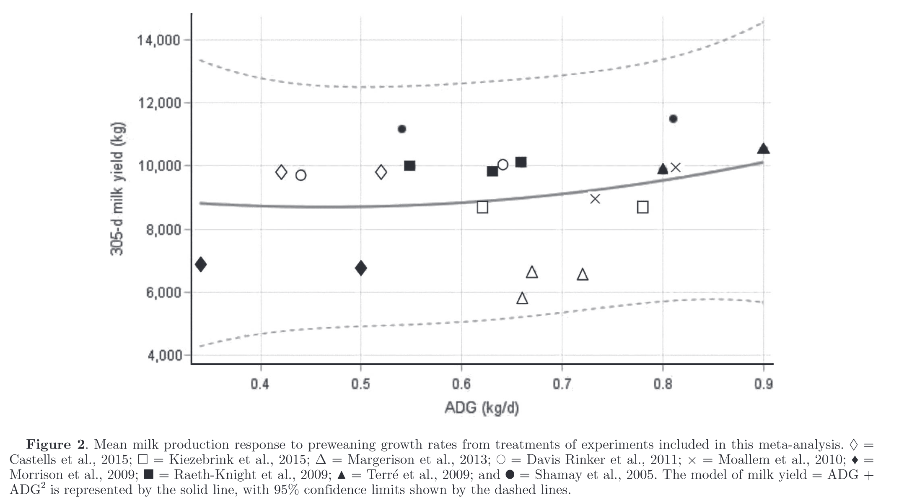Groei en productie uit verschillende studies
Bron: Gelsinger, Heinrichs, en Jones (2016)
Gezondheid van kalveren doet er toe
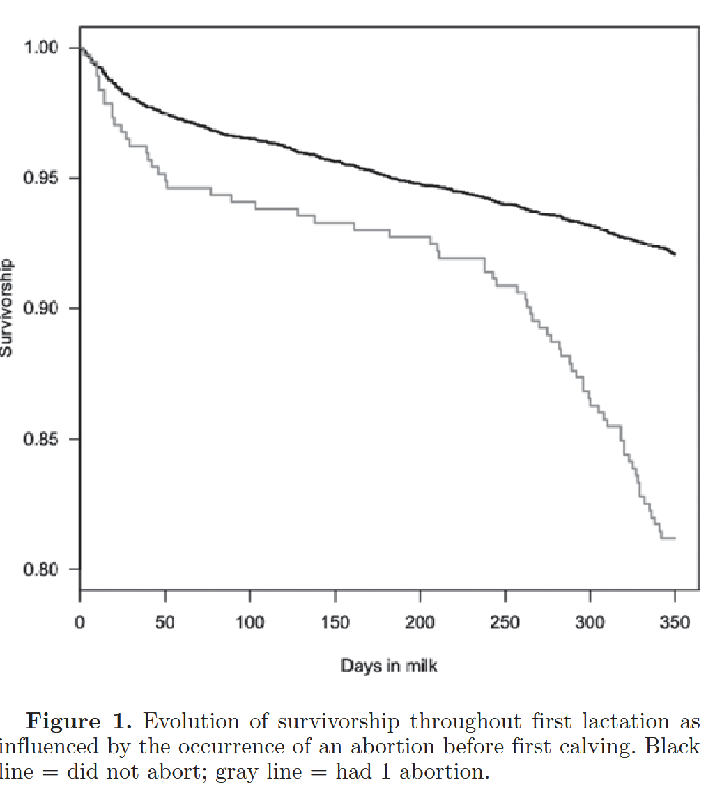
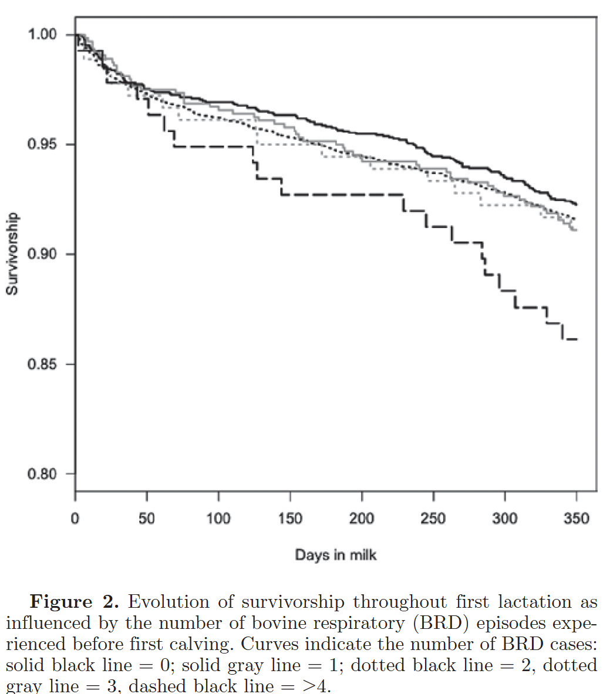
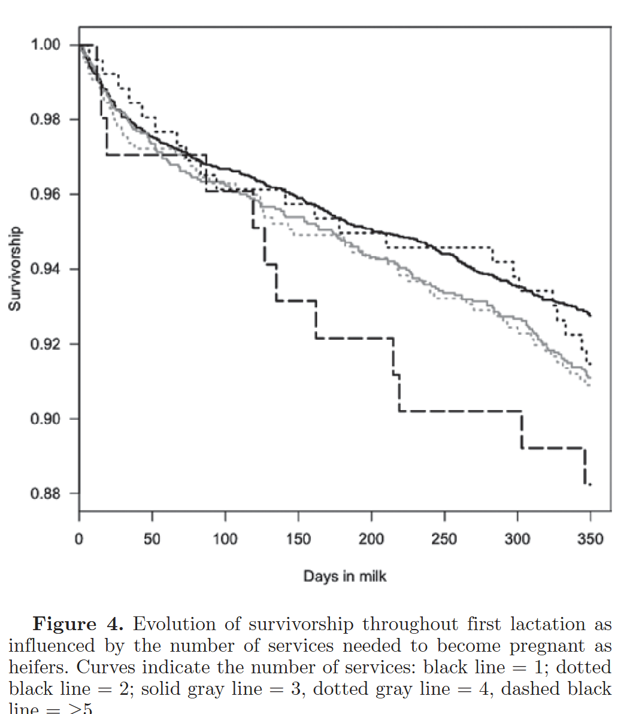
Bron: Bach (2011)
Opmerkingen
Er moet een match zijn tussen groeiomstandigheden moeder en kalf:
Afstemming moeder-kalf
Bron: Van Eetvelde en Opsomer (2017)
Afstemming moeder-kalf
- Hoge productie, of andere suboptimale omstandigheden zorgen voor lage IGF-1 en insulinespiegels in moeder
- Dit compromitteert groei kalf in baarmoeder
- Kalf compenseert dit na geboorte door hogere gevoeligheid voor insuline, hardere groei
- Dit leidt tot vettere vaarzen, en later tot lagere insulinegevoeligheid, ketose, in koeien
Trapmodel
We hebben gezien dat maximale groei niet altijd goed is. Een interessant idee is het trapmodel:
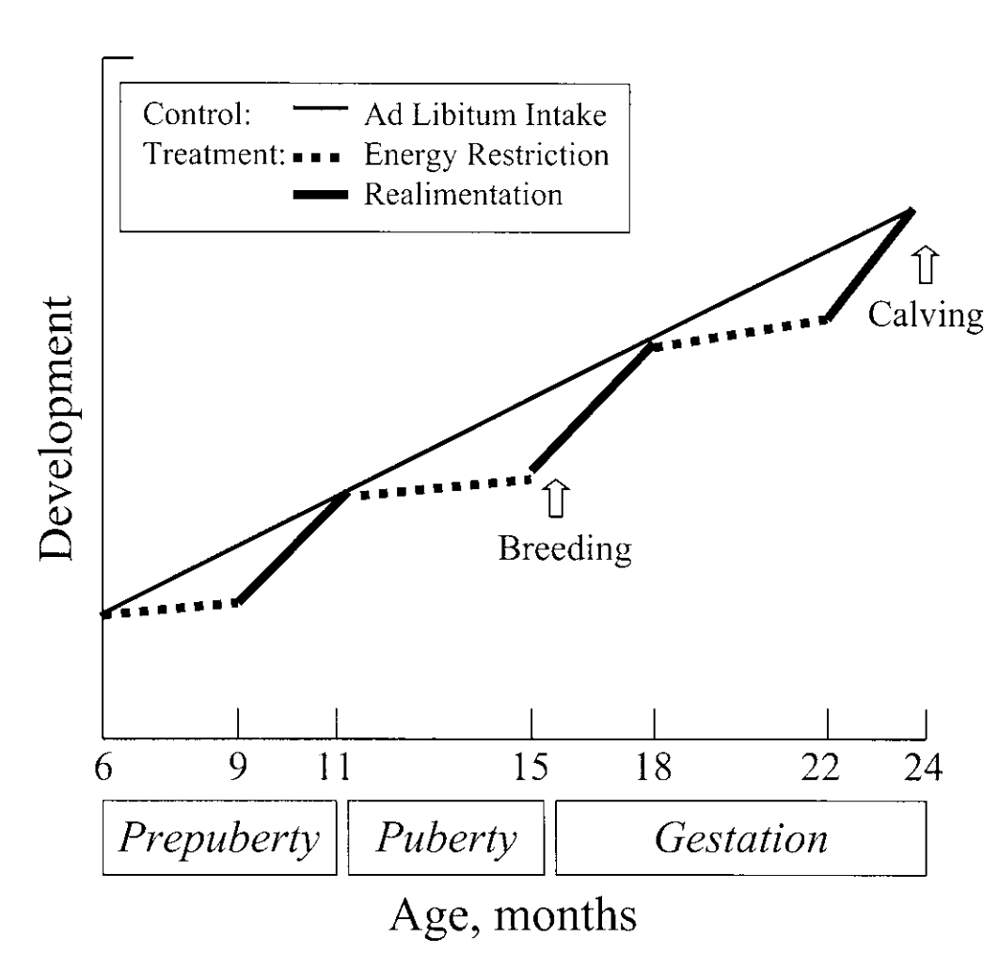Trapmodel
Trapmodel
| Controle | Trapmodel | |
|---|---|---|
| Groei (g/dag) | 0.78 | 0.89 |
| DS opname (kg/dag) | 11.4 | 9.4 |
| Groei efficientie (%) | 7 | 9.4 |
| Productie lakt 1 | ||
| Melk (kg/dag) | 24.7 | 30.1 |
| Vet (%) | 3.16 | 3.07 |
| Eiwit (%) | 2.98 | 3.08 |
| Productie lakt 2 | ||
| Melk (kg/dag) | 25.7 | 29.6 |
| Vet (%) | 3.77 | 3.65 |
| Eiwit (%) | 3.12 | 3.08 |
Bron: Ford en Park (2001)
Trapmodel en weidegang?
- Is dit wellicht één van de voordelen van weidegang bij jongvee?
- Daarnaast, beweging zorgt ook voor betere botontwikkeling bij jongvee:
| Sprints/week Moment | Weerstand buigen (x\(10^7\texttt{N mm}^2\)) | Breekkracht (N) |
|---|---|---|
| 0 sprint | 9.66 | 2.3 |
| 1 sprints | 10.4 | 2.6 |
| 3 sprints | 10.8 | 2.4 |
| 5 sprints | 10.2 | 3 |
Bron: Logan e.a. (2019)
Opfok: monitoren
App opfok:
- Geboortegewicht
- Volwassengewicht
- Leeftijd bij afkalven
- Gewicht bij afkalven
- Individuele kalveren
- Groei over tijd van groepen
- Groei in grafiek met doelen
Verwijzingen
Aschenbach, Jörg R., Qendrim Zebeli, Amlan K. Patra, Gabriele Greco, Salah Amasheh, en Gregory B. Penner. 2019. ‘Symposium review: The importance of the ruminal epithelial barrier for a healthy and productive cow*’. Journal of Dairy Science 102 (2): 1866–82. https://doi.org/10.3168/JDS.2018-15243.
Bach, A. 2011. ‘Associations between several aspects of heifer development and dairy cow survivability to second lactation’. Journal of Dairy Science 94 (2): 1052–57. https://doi.org/10.3168/jds.2010-3633.
Borreani, Giorgio, Ernesto Tabacco, en Angelo Ciotti. 1999. ‘Effects of mechanical conditioning on wilting of alfalfa and Italian ryegrass for ensiling’. Agronomy Journal 91 (3): 457–63. https://doi.org/10.2134/agronj1999.00021962009100030016x.
Cavallarin, Laura, Sara Antoniazzi, Giorgio Borreani, en Ernesto Tabacco. 2005. ‘Effects of wilting and mechanical conditioning on proteolysis in sainfoin (Onobrychis viciifolia Scop) wilted herbage and silage’. Journal of the Science of Food and Agriculture 85 (5): 831–38. https://doi.org/10.1002/jsfa.2022.
CVB. 2012. Tabellenboek Veevoeding 2012. Den Haag: Productschap Diervoeder.
Davies, D.R., R.J. Merry, A.P. Williams, E.L. Bakewell, D.K. Leemans, en J.K.S. Tweed. 1998. ‘Proteolysis During Ensilage of Forages Varying in Soluble Sugar Content’. Journal of Dairy Science 81 (2): 444–53. https://doi.org/10.3168/jds.S0022-0302(98)75596-1.
Ford, J.A., en C.S. Park. 2001. ‘Nutritionally Directed Compensatory Growth Enhances Heifer Development and Lactation Potential’. Journal of Dairy Science 84 (7): 1669–78. https://doi.org/10.3168/jds.S0022-0302(01)74602-4.
Gelsinger, S.L., A.J. Heinrichs, en C.M. Jones. 2016. ‘A meta-analysis of the effects of preweaned calf nutrition and growth on first-lactation performance1’. Journal of Dairy Science 99 (8): 6206–14. https://doi.org/10.3168/jds.2015-10744.
Humer, E, I Kröger, V Neubauer, K Schedle, N Reisinger, en Q Zebeli. 2018. ‘Supplementing phytogenic compounds or autolyzed yeast modulates ruminal biogenic amines and plasma metabolome in dry cows experiencing subacute ruminal acidosis.’ Journal of dairy science 101 (10): 9559–74. https://doi.org/10.3168/jds.2018-14744.
Kristensen, N.B., K.H. Sloth, O. Højberg, N.H. Spliid, C. Jensen, en R. Thøgersen. 2010. ‘Effects of microbial inoculants on corn silage fermentation, microbial contents, aerobic stability, and milk production under field conditions’. Journal of Dairy Science 93 (8): 3764–74. https://doi.org/10.3168/jds.2010-3136.
Larsen, M., H. Lapierre, en N.B. Kristensen. 2014. ‘Abomasal protein infusion in postpartum transition dairy cows: Effect on performance and mammary metabolism’. Journal of Dairy Science 97 (9): 5608–22. https://doi.org/10.3168/jds.2013-7247.
Li, Xujiao, Jipeng Tian, Qing Zhang, Yun Jiang, Zhe Wu, en Zhu Yu. 2018. ‘Effects of mixing red clover with alfalfa at different ratios on dynamics of proteolysis and protease activities during ensiling’. Journal of Dairy Science 101 (10): 8954–64. https://doi.org/10.3168/jds.2018-14763.
Lima, L.M., J.P. Dos Santos, D.R. Casagrande, C.L.S. Ávila, M.S. Lara, en T.F. Bernardes. 2017. ‘Lining bunker walls with oxygen barrier film reduces nutrient losses in corn silages’. Journal of Dairy Science, 1–9. https://doi.org/10.3168/jds.2016-12129.
Logan, Alyssa A, Brian D Nielsen, Cara I Robison, Jane M Manfredi, Daniel D Buskirk, Harold C Schott, en Kristina M Hiney. 2019. ‘Calves, as a Model for Juvenile Horses, Need Only One Sprint Per Week to Experience Increased Bone Strength’. Journal of Animal Science 97 (8): 3300–3312. https://doi.org/10.1093/jas/skz202.
Moallem, U, D Werner, H Lehrer, M Zachut, L Livshitz, S Yakoby, en a Shamay. 2010. ‘Long-term effects of ad libitum whole milk prior to weaning and prepubertal protein supplementation on skeletal growth rate and first-lactation milk production.’ Journal of dairy science 93 (6): 2639–50. https://doi.org/10.3168/jds.2009-3007.
Newlander, J. A., en W. H. Riddell. 1952. ‘Rate of Vitamin D Formation in Hay’. Journal of Animal Science, 419–21.
Pauly, Thomas M., en Per Lingvall. 1999. ‘Effects of mechanical forage treatment and surfactants on fermentation of grass silage’. Acta Agriculturae Scandinavica A: Animal Sciences 49 (4): 197–205. https://doi.org/10.1080/090647099423944.
Pieper, Bernd, Robert Pieper, en Ulrich Korn. 2009. ‘In fl uence of homolactic acid bacteria ( Lactobacillus plantarum DSMZ 8862 and 8866 ) in combination with molasses or partly neutralized formic acid while ensiling of nearly unfermentable feedstuffs on the content of biogenic amines and clostridia spores’, 262–63.
Savoie, P., Y. Tremblay, S. Dubreuil, en M. Khelifi. 2002. ‘Effect of mechanical conditioning, windrow handling, and maturity on the drying rate of timothy hay in a wind tunnel’. Canadian Biosystems Engineering / Le Genie des biosystems au Canada 44 (Cha 2001): 1–8.
Van Eetvelde, M, en G Opsomer. 2017. ‘Innovative Look at Dairy Heifer Rearing: Effect of Prenatal and Post-Natal Environment on Later Performance’. Reproduction in Domestic Animals 52 (S3): 30–36. https://doi.org/10.1111/rda.13019.